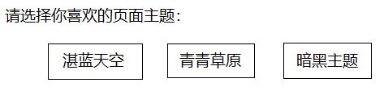
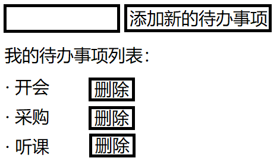

angular_day02
01.复习
(1)环境搭建
①升级Node.js到10.9+ node/npm/npx
②全局下载Angular脚手架工具
npm i -g @angular/cli
③运行脚手架创建空白项目
ng new myngapp02
④进入空白项目，运行当前项目：package.json/scripts
cd myngapp02
npm start
⑤使用客户端浏览器访问
http://127.0.0.1:4200
(2)Angular核心概念之一——组件
可以复用的页面片段，
Component = Script + Template + Style
Angular中的组件是多文件组件： .ts + .html + .css/.scss
注意：组件必须在某个模块(AppModule)中声明！
使用快捷命令创建： ng g component 组件名
(3)Angular核心概念之二——数据绑定
①innerHTML绑定：{{ }}
②属性绑定：[ attr ] = ""
③事件绑定：( click ) = "fn( )"
④循环绑定指令：*ngFor
⑤选择绑定指令：*ngIf
⑥选择绑定指令：[ngSwitch] *ngSwitchCase *ngSwitchDefault
⑦样式绑定指令：[ngStyle]
⑧样式绑定指令：[ngClass]
⑨双向数据绑定指令：
02.面试题
面试题：Angular中指令分为哪几类： (1)组件指令Component extends Directive，组件继承自指令，组件是有模板的指令 (2)结构型指令 可以影响当前的DOM结构的指令；所有结构型指令都以 * 开头 (3)属性型指令 不会影响DOM结构，只会影响当前元素的特征，如样式；所有的属性型指令都用 [ ] 括起来！
1.Angular核心概念之三——指令(Directive)
指令：是一种特殊的模板页面内容，可以对页面执行特殊的处理； 例如： < any *ngFor="" > Angular中常见指令： ①循环绑定指令： *ngFor < any *ngFor="let tmp of 集合对象" > ②选择绑定指令： *ngIf < any *ngIf="expression" > 提示：*ngIf会影响DOM结构 ③选择绑定指令： [ngSwitch] *ngSwitchCase *ngSwitchDefault < any [ngSwitch]="变量名" > < any *ngSwitchCase="值" >....< /any > < any *ngSwitchCase="值" >....< /any > ... < any *ngSwitchDefault>.... < /any > ④样式绑定指令：[ngStyle] < any [ngStyle]="obj" > ⑤样式绑定指令：[ngClass] < any [ngClass]="obj" > 练习：创建新的组件myc02-directive，实现某块区域样式切换效果： 
2.(了解)如何自定义指令
提示：可使用工具 ng g directive 指令名 快速的创建一个指令
< div appNeedStrong>....< /div >
@Directive({ selector: 'appNeedStrong' })
export class MyDirective {
contructor( el: ElementRef){
el.nativeElement.xxx....
}
}
3.Angular中的双向数据绑定
方向1：Model => View
方向2：View => Model
Angular中实现双向数据绑定的方法：
< input [(ngModel)]="userName" >
提示：ngModel指令处于FormsModule，必须在当前模块中声明导入才能使用：
import { FormsModule } from '@angular/forms';
@NgModule({
imports: [ FormsModule ]
})
如果想监视模型数据的改变（就像Vue.js中的watch函数），可以使用 ngModelChange事件：
< input [(ngModel)]="userName" (ngModelChange)="fn( )" >
练习：创建密码输入框，随着用户的输入，后面的提示信息不停的在改变：
"密码不能为空"
"密码长度不能少于6位"
"密码长度合法"
"密码长度不能超过12位"
练习：使用Angular实现 TodoList

4.Angular核心概念之四——管道
Vue.js中的过滤器(filter)：{{ 1 | sex('zh') }}
Angular中的类似的概念称为管道(pipe)：{{ 1 | sex:'zh' }}
Vue.js没有内置任何过滤器；但Angular内置了很多好用的管道： ①lowercase：把数据转换为小写形式 ②uppercase：把数据转换为大写形式 ③slice：获取字符串或数组中的一部分 ④json：把对象转换为JSON字符串 ⑤date：把日期/数字转换为特定格式的日期字符串 ⑥number：数字格式化(每三位加逗号，并指定小数位数) ⑦currency：把数字以货币形式显示
5.课后任务
(1)对比Vue.js和Angular中数据绑定方法 (2)对比Vue.js和Angular中所有的指令 (2)创建组件 xz-register，实现学子商城注册页面中所有的输入校验和注册提交功能（需要借助XHR访问后台数据API）